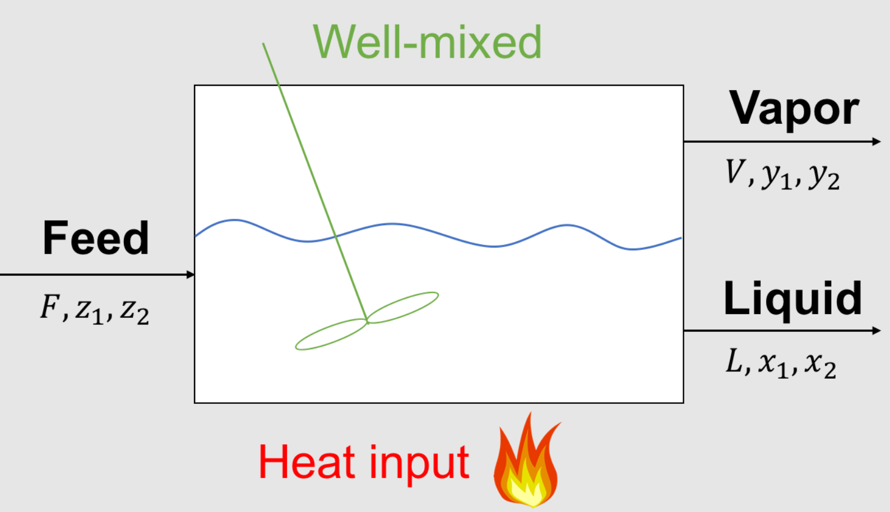

Newton’s Method for Systems of Equations
Contents
Newton’s Method for Systems of Equations¶
CBE 20258. Numerical and Statistical Analysis. Spring 2020.
© University of Notre Dame
Learning Objectives¶
After studying this notebook, completing the activities, and asking questions in class, you should be able to:
Extend Newton’s Method to multiple dimensions through the flash example.
Know how to assemble a Jacobian matrix and what that means.
Understand how to use a finite difference formula to approximate the Jacobian matrix.
Apply Multivariate Newton’s Method to the flash problem.
Motivation: Flash Problem Revisited¶
Recall the flash problem from Chap 04-01 Notebook:

Parameters (given):
\(F\) feed inlet flowrate, mol/time or kg/time
\(z_1\) composition of species 1 in feed, mol% or mass%
\(z_2\) composition of species 2 in feed, mol% or mass%
\(K_1\) partion coefficient for species 1, mol%/mol% or mass% / mass%
\(K_2\) partion coefficient for species 2, mol%/mol% or mass% / mass%
Variables (unknown):
\(L\) liquid outlet flowrate, mol/time or kg/time
\(x_1\) composition of species 1 in liquid, mol% or mass%
\(x_2\) composition of species 2 in liquid, mol% or mass%
\(V\) vapor outlet flowrate, mol/time or kg/time
\(y_1\) composition of species 1 in vapor, mol% or mass%
\(y_2\) composition of species 2 in vapor, mol% or mass%
How to solve the flash problem and other multidimensional problem with \(n\) unknown variables and \(n\) nonlinear equations?
Extending Newton’s Method to Multiple Dimensions¶
Say that we have a function of \(n\) variables \(\mathbf{x} = (x_1, \dots x_n):\) $\(\mathbf{F}(\mathbf{x}) = \begin{pmatrix}f_1(x_1,\dots,x_n)\\ \vdots \\ f_n(x_1,\dots,x_n) \end{pmatrix},\)\(the root is \)\mathbf{F}(\mathbf{x}) = \mathbf{0}.\( For this scenario we know longer have a tangent line at point \)\mathbf{x}\(, rather we have an \)n\(-dimensional tangent vector that is defined using the Jacobian matrix \)\( \mathbf{J}(\mathbf{x}) = \begin{pmatrix}\frac{\partial f_1}{\partial x_1}(x_1,\dots,x_n)& \dots & \frac{\partial f_1}{\partial x_n}(x_1,\dots,x_n)\\ \vdots & & \vdots\\ \frac{\partial f_n}{\partial x_1}(x_1,\dots,x_n)& \dots & \frac{\partial f_n}{\partial x_n}(x_1,\dots,x_n) \end{pmatrix},\)\( to define the tangent vector as \)\mathbf{J}(\mathbf{x})\mathbf{x}\(. Now we reformulate Newton's method for a single equation \)\(x_{i+1} = x_i - \frac{f(x_i)}{f'(x_i)},\)\( as \)\(f'(x_i)(x_{i+1} - x_i) = - f(x_i).\)\( The multidimensional analog of this is \)\(\mathbf{J}(\mathbf{x}_i)(\mathbf{x}_{i+1} - \mathbf{x}_{i}) = -\mathbf{F}(\mathbf{x}_i).\)\( Note this is a linear system of equations to solve to get a vector of changes for each \)x\(: \)\pmb{\delta} = \mathbf{x}{i+1} - \mathbf{x}{i}.\( Therefore, in each step we solve the system \)\(\mathbf{J}(\mathbf{x}_i)\pmb{\delta} = -\mathbf{F}(\mathbf{x}_i),\)\( and set \)\(\mathbf{x}_{i+1} = \mathbf{x}_i + \pmb{\delta}.\)$ In multidimensional root finding we can observe the importance of having a small number of iterations: we need to solve a linear system of equations at each iteration. If this system is large, the time to find the root could be prohibitively long.
To demonstrate how Newton’s method works for a multi-dimensional function.
Two Phase, Single Feed Phase Problem¶
Mathematical Model¶
Feed Specifications: \(F = 1.0\) mol/s, \(z_1\) = 0.5 mol/mol, \(z_2\) = 0.5 mol/mol
Given Equilibrium Data: \(K_1\) = 3 mol/mol, \(K_2\) = 0.05 mol/mol
Overall Material Balance
Component Mass Balances
Thermodynamic Equilibrium
Summation
Convert to Canonical Form¶
How to convert these equations to \(\mathbf{F}(\mathbf{x}) = 0\)?
$\(\mathbf{F}(\mathbf{x}) = \begin{pmatrix} L + V - F\\ Vy_1 + L x_1 - F z_1 \\ V y_2 + L x_2 - F z_2 \\ y_1 - K_1 x_1 \\ y_2 - K_2 x_2 \\ y_1 + y_2 - x_1 - x_2 \end{pmatrix},\)\( with \)\mathbf{x} = (L, V, x_1, x_2, y_1, y_2).$
Some people use \(\mathbf{F}(\mathbf{x}) = 0\) and others use \(c(x) = 0\) for canonical form. They mean the same thing.
def my_f(x):
''' Nonlinear system of equations in conancial form F(x) = 0
Copied from Lecture 7.
Arg:
x: vector of variables
Returns:
r: residual, F(x)
'''
# Initialize residuals
r = np.zeros(6)
# given data
F = 1.0
z1 = 0.5
z2 = 0.5
K1 = 3
K2 = 0.05
# copy values from x to more meaningful names
L = x[0]
V = x[1]
x1 = x[2]
x2 = x[3]
y1 = x[4]
y2 = x[5]
# equation 1: overall mass balance
r[0] = V + L - F
# equations 2 and 3: component mass balances
r[1] = V*y1 + L*x1 - F*z1
r[2] = V*y2 + L*x2 - F*z2
# equation 4 and 5: equilibrium
r[3] = y1 - K1*x1
r[4] = y2 - K2*x2
# equation 6: summation
r[5] = (y1 + y2) - (x1 + x2)
# This is known as the Rachford-Rice formulation for the summation constraint
return r
Assemble Jacobian Matrix (Analytic)¶
The Jacobian is $\( \mathbf{J}(\mathbf{x}) = \begin{pmatrix} \frac{\partial f_1}{\partial L} & \frac{\partial f_1}{\partial V} & \frac{\partial f_1}{\partial x_1} & \frac{\partial f_1}{\partial x_2} & \frac{\partial f_1}{\partial y_1} & \frac{\partial f_1}{\partial y_2} \\ \frac{\partial f_2}{\partial L} & \frac{\partial f_2}{\partial V} & \frac{\partial f_2}{\partial x_1} & \frac{\partial f_2}{\partial x_2} & \frac{\partial f_2}{\partial y_1} & \frac{\partial f_2}{\partial y_2} \\ \vdots & & & & & \vdots \\ \frac{\partial f_6}{\partial L} & \frac{\partial f_6}{\partial V} & \frac{\partial f_6}{\partial x_1} & \frac{\partial f_6}{\partial x_2} & \frac{\partial f_6}{\partial y_1} & \frac{\partial f_6}{\partial y_2} \\ \end{pmatrix} \)$
which evaluates to
We can tediously program a function to evaluate the Jacobian.
def my_J(x):
'''Jacobian matrix for two phase flash problem
Arg:
x: vector of variables
Returns:
J: square Jacobian matrix
'''
# allocate matrix of zeros
J = np.zeros((6,6))
# given data
F = 1.0
z1 = 0.5
z2 = 0.5
K1 = 3
K2 = 0.05
# copy values from x to more meaningful names
L = x[0]
V = x[1]
x1 = x[2]
x2 = x[3]
y1 = x[4]
y2 = x[5]
# first row (overall material balance)
J[0,0] = 1
J[0,1] = 1
# second row (component 1 material balance)
J[1,0] = x1
J[1,1] = y1
J[1,2] = L
J[1,4] = V
# third row (component 2 material balance)
J[2,0] = x2
J[2,1] = y2
J[2,3] = L
J[2,5] = V
# fourth row (equilibrium for component 1)
J[3,2] = -K1
J[3,4] = 1
# fifth row (equilibrium for component 2)
J[4,3] = -K2
J[4,5] = 1
# sixth row (summation equation)
J[5,2] = -1
J[5,3] = -1
J[5,4] = 1
J[5,5] = 1
return J
Unit Test: Immediately after we create a function, we should test it. Let’s reuse the same initial guess as in the previous notebook in Chap 1.
\(L = 0.5\), \(V = 0.5\), \(x_1 = 0.55\), \(x_2 = 0.45\), \(y_1 = 0.65\), \(y_2 = 0.35\)
Jacobian structure copied from above: $\( \mathbf{J}(\mathbf{x}) = \begin{pmatrix} 1 & 1 & 0 & 0 & 0 & 0\\ x_1 & y_1 & L & 0 & V & 0 \\ x_2 & y_2 & 0 & L & 0 & V \\ 0 & 0 & -K_1 & 0 & 1 & 0 \\ 0 & 0 & 0 & -K_2 & 0 & 1 \\ 0 & 0 & -1 & -1 & 1 & 1 \end{pmatrix}.\)$
import numpy as np
x0 = np.array([0.5, 0.5, 0.55, 0.45, 0.65, 0.35])
print("J(x0) = \n",my_J(x0))
J(x0) =
[[ 1. 1. 0. 0. 0. 0. ]
[ 0.55 0.65 0.5 0. 0.5 0. ]
[ 0.45 0.35 0. 0.5 0. 0.5 ]
[ 0. 0. -3. 0. 1. 0. ]
[ 0. 0. 0. -0.05 0. 1. ]
[ 0. 0. -1. -1. 1. 1. ]]
First Iteration¶
print("F(x0) = \n",my_f(x0),"\n")
print("J(x0) = \n",my_J(x0),"\n")
F(x0) =
[ 0. 0.1 -0.1 -1. 0.3275 0. ]
J(x0) =
[[ 1. 1. 0. 0. 0. 0. ]
[ 0.55 0.65 0.5 0. 0.5 0. ]
[ 0.45 0.35 0. 0.5 0. 0.5 ]
[ 0. 0. -3. 0. 1. 0. ]
[ 0. 0. 0. -0.05 0. 1. ]
[ 0. 0. -1. -1. 1. 1. ]]
We now need to solve the linear system: $\(\mathbf{J}(\mathbf{x}_0)\pmb{\delta}_1 = -\mathbf{F}(\mathbf{x}_0).\)$
Let’s use Gaussian elimination. We’ll start by copying the code from Class 6:
import numpy as np
def BackSub(aug_matrix,z_tol=1E-8):
"""back substitute a N by N system after Gauss elimination
Args:
aug_matrix: augmented matrix with zeros below the diagonal [numpy 2D array]
z_tol: tolerance for checking for zeros below the diagonal [float]
Returns:
x: length N vector, solution to linear system [numpy 1D array]
"""
[Nrow, Ncol] = aug_matrix.shape
try:
# check the dimensions
assert Nrow + 1 == Ncol
except AssertionError:
print("Dimension checks failed.")
print("Nrow = ",Nrow)
print("Ncol = ",Ncol)
raise
assert type(z_tol) is float, "z_tol must be a float"
# check augmented matrix is all zeros below the diagonal
for r in range(Nrow):
for c in range(0,r):
assert np.abs(aug_matrix[r,c]) < z_tol, "\nWarning! Nonzero in position "+str(r)+","+str(c)
# create vector of zeros to store solution
x = np.zeros(Nrow)
# loop over the rows starting at the bottom
for row in range(Nrow-1,-1,-1):
RHS = aug_matrix[row,Nrow] # far column
# loop over the columns to the right of the diagonal
for column in range(row+1,Nrow):
# substract, i.e., substitute the already known values
RHS -= x[column]*aug_matrix[row,column]
# compute the element of x corresponding to the current row
x[row] = RHS/aug_matrix[row,row]
### END SOLUTION
return x
def swap_rows(A, a, b):
"""Rows two rows in a matrix, switch row a with row b
args:
A: matrix to perform row swaps on
a: row index of matrix
b: row index of matrix
returns: nothing
side effects:
changes A to rows a and b swapped
"""
# A negative index will give unexpected behavior
assert (a>=0) and (b>=0)
N = A.shape[0] #number of rows
assert (a<N) and (b<N) #less than because 0-based indexing
# create a temporary variable to store row a
temp = A[a,:].copy()
# move row b values into the location of row a
A[a,:] = A[b,:].copy()
# move row a values (stored in temp) into the location of row a
A[b,:] = temp.copy()
def GaussElimPivotSolve(A,b,LOUD=False):
"""create a Gaussian elimination with pivoting matrix for a system
Args:
A: N by N array
b: array of length N
Returns:
solution vector in the original order
"""
# checks dimensions
[Nrow, Ncol] = A.shape
assert Nrow == Ncol
N = Nrow
#create augmented matrix
aug_matrix = np.zeros((N,N+1))
aug_matrix[0:N,0:N] = A
aug_matrix[:,N] = b
#augmented matrix is created
#create scale factors
s = np.zeros(N)
count = 0
for row in aug_matrix[:,0:N]: #don't include b
s[count] = np.max(np.fabs(row))
count += 1
# print diagnostics if requested
if LOUD:
print("s =",s)
print("Original Augmented Matrix is\n",aug_matrix)
#perform elimination
for column in range(0,N):
## swap rows if needed
# find largest position
largest_pos = (np.argmax(np.fabs(aug_matrix[column:N,column]/
s[column:N])) + column)
# check if current column is largest position
if (largest_pos != column):
# if not, swap rows
if (LOUD):
print("Swapping row",column,"with row",largest_pos)
print("Pre swap\n",aug_matrix)
swap_rows(aug_matrix,column,largest_pos)
#re-order s
tmp = s[column]
s[column] = s[largest_pos]
s[largest_pos] = tmp
if (LOUD):
print("A =\n",aug_matrix)
print("new_s =\n", s)
#finish off the row
for row in range(column+1,N):
mod_row = aug_matrix[row,:]
mod_row = mod_row - mod_row[column]/aug_matrix[column,column]*aug_matrix[column,:]
aug_matrix[row] = mod_row
#now back solve
if LOUD:
print("Final aug_matrix is\n",aug_matrix)
x = BackSub(aug_matrix)
return x
And now let’s solve the linear system, copied again for clarity:
delta_1 = GaussElimPivotSolve(my_J(x0), -my_f(x0))
print("delta_1 =",delta_1)
delta_1 = [ 1.44067797 -1.44067797 -0.2279661 0.2279661 0.31610169 -0.31610169]
Finally, we need to calculate \(\mathbf{x_1}\):
x1 = x0 + delta_1
print("x1 = ",x1)
x1 = [ 1.94067797 -0.94067797 0.3220339 0.6779661 0.96610169 0.03389831]
The results for multivariate Newton’s method matches the single variable case. Division is replaced with solving a linear system of equations.
Write your sentence here:
Finite Difference to Approximate the Jacobian Matrix¶
Assembling the Jacobian matrix for each problem is tedious and error prone. Instead, we can apply finite difference to each element of \(\mathbf{x}\) to built the Jacobian matrix column by column.
def Jacobian(f,x,delta = 1.0e-7):
'''Approximate Jacobian using forward finite difference
Args:
f: vector-valued function
x: point to build approximation J(x) around
delta: finite difference step size
Returns:
J: square Jacobian matrix (approximation)
'''
# Determine size
N = x.size
#Evaluate function f at x
fx = f(x) #only need to evaluate this once
# Make sure f is square (no. inputs = no. outputs)
try:
assert N == fx.size, "Your problem is not square!"
except AssertionError:
print("x = ",x)
print("fx = ",fx)
# Allocate empty matrix
J = np.zeros((N,N))
idelta = 1.0/delta #division is slower than multiplication
x_perturbed = x.copy() #copy x to add delta
# Loop over elements of x and columns of J
for i in range(N):
# Perturb (apply step) to element i of x
x_perturbed[i] += delta
# Approximate column in Jacobian
col = (f(x_perturbed) - fx) * idelta
# Reset element of x
x_perturbed[i] = x[i]
# Save results
J[:,i] = col
# end for loop
return J
Unit Test: Immediately after we create a function, we need to test it. Let’s use or flash problem as a unit test.
print("*** Analytic ***")
print("J(x0) = \n",my_J(x0),"\n")
print("\n\n*** Finite Difference ***")
print("J(x0) = \n",Jacobian(my_f,x0),"\n")
*** Analytic ***
J(x0) =
[[ 1. 1. 0. 0. 0. 0. ]
[ 0.55 0.65 0.5 0. 0.5 0. ]
[ 0.45 0.35 0. 0.5 0. 0.5 ]
[ 0. 0. -3. 0. 1. 0. ]
[ 0. 0. 0. -0.05 0. 1. ]
[ 0. 0. -1. -1. 1. 1. ]]
*** Finite Difference ***
J(x0) =
[[ 1. 1. 0. 0. 0. 0. ]
[ 0.55 0.65 0.5 0. 0.5 0. ]
[ 0.45 0.35 0. 0.5 0. 0.5 ]
[ 0. 0. -3. 0. 1. 0. ]
[ 0. 0. 0. -0.05 0. 1. ]
[ 0. 0. -1. -1. 1. 1. ]]
Putting it all together: Multivariate Newton’s Method¶
We can now stick together i) solving a linear system, and ii) finite difference into a multivariate Newton’s method solver.
def newton_system(f,x0,exact_Jac=None,delta=1E-7,epsilon=1.0e-6, LOUD=False):
"""Find the root of the function f via exact or inexact Newton-Raphson method
Args:
f: function to find root of
x0: initial guess
exact_Jac: function to calculate J. If None, use finite difference
delta: finite difference tolerance. Only used if J is not specified
epsilon: tolerance
Returns:
estimate of root
"""
x = x0
if (LOUD):
print("x0 =",x0)
iterations = 0
fx = f(x)
while (np.linalg.norm(fx) > epsilon):
if exact_Jac is None:
# Use finite difference
J = Jacobian(f,x,delta)
else:
J = exact_Jac(x)
RHS = -fx;
# solve linear system
# We could have used GaussElimPivotSolve here instead
delta_x = np.linalg.solve(J,RHS)
# Check if GE returned any NaN values
if np.isnan(delta_x).any():
print("Gaussian Elimination Failed!")
print("J = \n",J,"\n")
print("J is rank",np.linalg.matrix_rank(J),"\n")
print("RHS = ",RHS)
x = x + delta_x
fx = f(x)
if (LOUD):
print("\nIteration",iterations+1,": x =",x,"\n norm(f(x)) =",np.linalg.norm(fx))
iterations += 1
print("\nIt took",iterations,"iterations")
return x #return estimate of root
Return to the Two Phase Flash Calculation¶
# First, we'll try exact Newton's method
# We give the function my_J as an input argument
xsln = newton_system(my_f,x0,exact_Jac=my_J,LOUD=True)
x0 = [0.5 0.5 0.55 0.45 0.65 0.35]
Iteration 1 : x = [ 1.94067797 -0.94067797 0.3220339 0.6779661 0.96610169 0.03389831]
norm(f(x)) = 1.1084980479560436
Iteration 2 : x = [0.72368421 0.27631579 0.3220339 0.6779661 0.96610169 0.03389831]
norm(f(x)) = 3.5551252101777283e-16
It took 2 iterations
Wow, it took Newton’s method only 2 iterations to find the solution with a residual norm of 10\(^{-16}\). Moreover, it recovered from a non-physical intermediate value.
Now let’s try inexact Newton’s method:
xsln = newton_system(my_f,x0,LOUD=True)
x0 = [0.5 0.5 0.55 0.45 0.65 0.35]
Iteration 1 : x = [ 1.94067797 -0.94067797 0.3220339 0.6779661 0.9661017 0.03389831]
norm(f(x)) = 1.1084980482929319
Iteration 2 : x = [0.72368422 0.27631579 0.3220339 0.6779661 0.96610169 0.0338983 ]
norm(f(x)) = 4.3810305996817624e-09
It took 2 iterations
With inexact Newton’s method we also converge in two iterations with a residual norm of 10\(^{-9}\).
Now let’s break it¶
Let’s try to find an initial point that breaks Newton’s method. Perhaps a near single phase guess (almost all mass in liquid) with the same composition in both phases.
x0_break1 = np.array([0.99, 0.01, 0.5, 0.5, 0.5, 0.5])
xsln = newton_system(my_f,x0_break1,exact_Jac=my_J,LOUD=True)
x0 = [0.99 0.01 0.5 0.5 0.5 0.5 ]
---------------------------------------------------------------------------
LinAlgError Traceback (most recent call last)
Input In [13], in <cell line: 2>()
1 x0_break1 = np.array([0.99, 0.01, 0.5, 0.5, 0.5, 0.5])
----> 2 xsln = newton_system(my_f,x0_break1,exact_Jac=my_J,LOUD=True)
Input In [10], in newton_system(f, x0, exact_Jac, delta, epsilon, LOUD)
26 RHS = -fx;
28 # solve linear system
29 # We could have used GaussElimPivotSolve here instead
---> 30 delta_x = np.linalg.solve(J,RHS)
32 # Check if GE returned any NaN values
33 if np.isnan(delta_x).any():
File <__array_function__ internals>:180, in solve(*args, **kwargs)
File ~/opt/anaconda3/envs/jbook/lib/python3.9/site-packages/numpy/linalg/linalg.py:393, in solve(a, b)
391 signature = 'DD->D' if isComplexType(t) else 'dd->d'
392 extobj = get_linalg_error_extobj(_raise_linalgerror_singular)
--> 393 r = gufunc(a, b, signature=signature, extobj=extobj)
395 return wrap(r.astype(result_t, copy=False))
File ~/opt/anaconda3/envs/jbook/lib/python3.9/site-packages/numpy/linalg/linalg.py:88, in _raise_linalgerror_singular(err, flag)
87 def _raise_linalgerror_singular(err, flag):
---> 88 raise LinAlgError("Singular matrix")
LinAlgError: Singular matrix
Let’s try slightly different compositions in the phases.
x0_break2 = np.array([1.0, 0.0, 0.51, 0.49, 0.52, 0.48])
xsln = newton_system(my_f,x0_break2,exact_Jac=my_J,LOUD=True)
x0 = [1. 0. 0.51 0.49 0.52 0.48]
Iteration 1 : x = [-16.79661017 17.79661017 0.3220339 0.6779661 0.96610169
0.03389831]
norm(f(x)) = 15.95834985257004
Iteration 2 : x = [0.72368421 0.27631579 0.3220339 0.6779661 0.96610169 0.03389831]
norm(f(x)) = 2.989908109668815e-14
It took 2 iterations
It works.
What happens if we give a negative number for a flowrate composition or initial value?
x0_break2 = np.array([2.0, -1.0, 0.5, 0.5, 1.5, -0.5])
xsln = newton_system(my_f,x0_break2,exact_Jac=my_J,LOUD=True)
x0 = [ 2. -1. 0.5 0.5 1.5 -0.5]
Iteration 1 : x = [ 1.1779661 -0.1779661 0.3220339 0.6779661 0.96610169 0.03389831]
norm(f(x)) = 0.41378239393191524
Iteration 2 : x = [0.72368421 0.27631579 0.3220339 0.6779661 0.96610169 0.03389831]
norm(f(x)) = 1.2412670766236366e-16
It took 2 iterations
It still works. Rachford-Rice is pretty robust (for the selected values of \(K_1\) and \(K_2\)).
Using numpy instead¶
numpy and scipy offer a few different implementations of Newton’s method. However, we found these to be unreliable in the past. Instead, we recommend either using the Newton solver we put together in this notebook or Pyomo (future notebook).